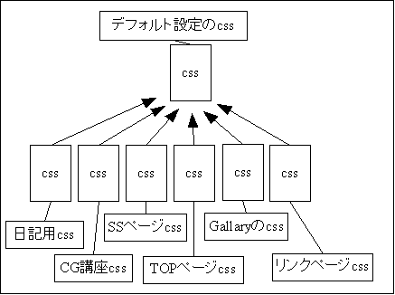
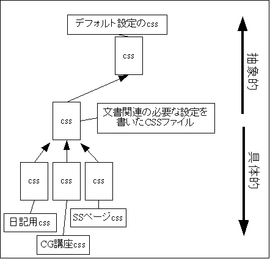

Introduction
さて、第１回でデフォルトスタイルシートの大切さを解かせていただきましたが、次はこれを前提にした発展編
正直、スタイルシートをしっかり理解している人相手の話なので、やる必要は無いかもしれないと思いましたが、話の都合上、ここに埋め込んでしまいました
前説
さて、ここを読んでる貴方、スタイルシートと密接している事で、サイトをデザインする時に気を付けておくことが一つあります
「さて何ですか？」と聞くことも出来ますが、答えをパッと言ってしまいましょう、サイトっていうのはいつか書き換えることがあると言うことです
特にデザイン、もしサイトをリニューアルする事があったとして、「あー、この文書デザインあわないし、いい機会だから消しちゃおう」なんて事があったら…
はっきり言ってとんでもない！ 馬鹿みたいじゃないですか！
そんな理由で世界から、大事なリソースを奪うのは管理人の傲慢と知ってください、今から少しづつ伝えることは、そういう馬鹿な事をしないでも、たとえ何百というファイルがリニューアル時の対象になろうとも、デザイナーの苦労が増えないようにしてみせる方法です
実際、自分も驚いたくらいに、ファイルが増えても全く、全然困りません
スタイルシートの特性
ここを読んでいる人には既に必要無いお話になっているのですが、スタイルシートは@importで文書を読み込む事が出来るようになっています
では、ここで質問なのですが、@importで設定を読み出すということは、文書的には一体どういう理由で読み込まれるのでしょうか？
実用的には、良く使う設定をあらかじめ書き出して保存しておくことがその理由になりますが、よく使われる設定とは？ 何か共通点はありませんか？
場合は幾つかありますが、ここで何か一例を挙げましょう、当たり前の物になりますが、ページの基本設定です。次の図のように、ページの基本設定を読み出して利用することが一番シンプルでよく使う設定になります

さて、これを少し発展させましょう。デフォルト設定を読み込んでいる各スタイルシートが次の様に使用されているとします
比較的良くある、サイト構成にしたつもりですが、ここでの注目すべき所は最初に出した３つ、つまり日記用CSS、CG講座用CSS、SSページ用CSSです
この３つのコンテンツにはある共通点があります、説明せずとも自明かもしれませんが、どれも長文を必要とするコンテンツですね
当然、どのコンテンツも文章が読みやすいようなデザインを行うわけで、それぞれのスタイルシートには、似たような設定が多く見受けられることになります
ということは同じ事を何度も書くのは時間の無駄、同時に回線の無駄使いでもありますので、ここで楽をするために次のように工夫をします
それぞれのスタイルシートで設定が似通う部分を、まとめこんで違うスタイルシートにしてしまいました。当然ですが、みなデフォルトのスタイルシートを読み込んでいるのも共通なので、上の図のような矢印で繋がれた関係になります
図の上のデフォルトCSSから、日記用CSSまで、矢印を逆に辿っていくと、それぞれのCSSは、あらゆる文書で共通の設定→長文に適した設定→日記に適した設定、と次第に内容が具体的になっていきます実際やってみれば分かりますが、設定というのはコンテンツの内容が似ていると、半分以上ダブります。わざわざ同じ物を書き直さないでも、こうすればもっと楽が出来ますね
さらに、一度読んだスタイルシートは、以降はブラウザのキャッシュへ残りますので、全体的には回線効率を上げることにもなります
とまぁ、ここまでお話ししましたが、設定のまとめ込みを行う事での利点は実は、別の所にあります
用途によって出てくる、同じような設定をまとめ込んでしまうということは、逆の言い方をすれば、まとめ込めるような設定をその場から追い出してしまうと言うことです
まとめ込めるような設定と言うのは往々にして当たり前な設定な訳ですから、そういう設定を追い出してしまえば後に残るのは、自分が今、本当に設定しておきたいようなものと言うことになりますね
つまりは、自分が今何をしたいのか、読みやすく、考えやすく、短い時間で実現することを同時に可能にする利点があるのです
@import文を使うのは一向に構わないのですが、IEには@importのネストを3階層より深くできないという仕様があります(自分としては不便でしょうがありませんが、仕様であってバグではありません)。
上の図では、すでに３階層で、いっぱいいっぱいの状況になっていますので、それを気を付けた上でお使い下さい